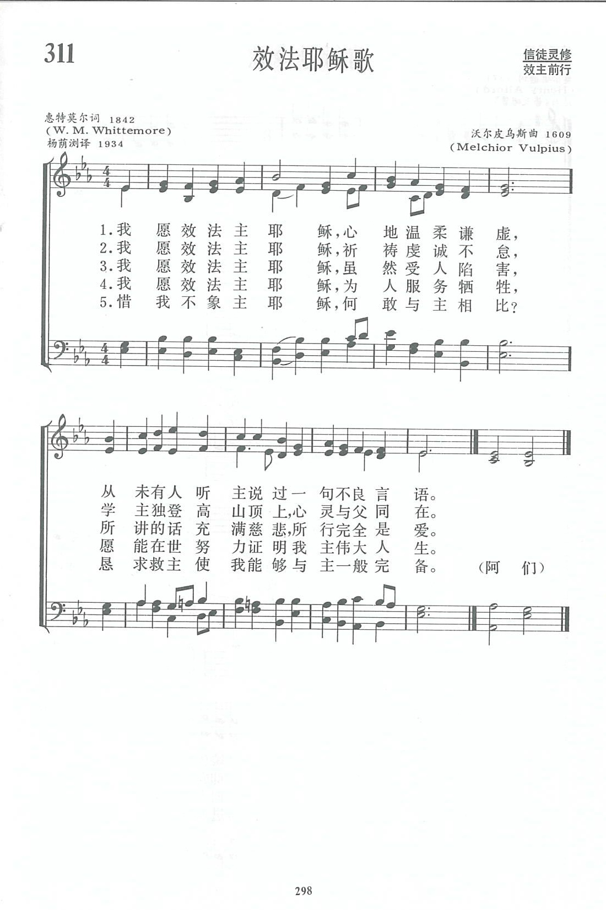

|
|
讚美詩(新編) |
|
1 I want to be like Jesus, Refrain: 2 I want to be like Jesus, 3 I want to be like Jesus, 4 Alas! I'm not like Jesus,
Author: A. K. Miller |
|
|
https://www.zanmeishige.com/tab/13984.html?songbook=1&index=311

|
|
|
|
|


https://www.youtube.com/watch?v=m3o39uT8sww
| Text: | I want to be like Jesus |
| Author: | Rev. W. M. Whittemore |
| Tune: | HEBDEN |
| Composer: | H. J. Coldwell |
| Short Name: | W. Meynell Whittemore |
| Full Name: | Whittemore, W. Meynell (William Meynell), d 1894 |
| Death Year: | 1894 |
Whittemore, William Meynell, Editor of Sunshine, Rector of St. Katherine Cree, London, is the author of "I want to be like Jesus " (Early Piety), in his Infant Altar, 1842; and "We won't give up the Bible" (Holy. Scriptures), 1839. The form of the latter in Snepp's Songs of Grace & Glory, 1872, is a revision by Bp. John Gregg.
--John Julian, Dictionary of Hymnology, Appendix, Part II (1907)
Author: A. K. Miller
Tune Information
| Title: | HEBDEN |
| Composer: | H. J. Coldwell |
| Meter: | 7.6.8.6 |
| Incipit: | 13215 56333 54342 |
| Copyright: | Public Domain |
第311首 效法耶稣歌 I want to be like Jesus _W.M．Whittemore
经文：“我心里柔和谦卑，你们当负我的轭，学我的样式”(太11：29)。
这首诗的词作者惠特莫尔(W.M．Whittemore，182O一1894)乃英国圣公会伦敦圣凯瑟堂牧师，《阳光》杂志的编辑。
这首诗原载于他所出版的《儿童祭坛》一书中，是一首简洁生动的青年圣诗，要求信徒效法主耶稣：
“心地温柔谦虚”(第一节)，
“祈祷虔诚不怠”(第二节)，
“所行完全是爱”(第三节)，
为人服务牺牲”(第四节)各方面的美德，
最后“恳求救主使我能够与主一般完备”作为结束。
曲作者沃尔皮乌斯的事略参阅第109首。这首曲调有好几个名称，如《CANA》、《BREMEN》，也以作者姓氏《沃尔皮乌斯(VULPIUS)》命名。